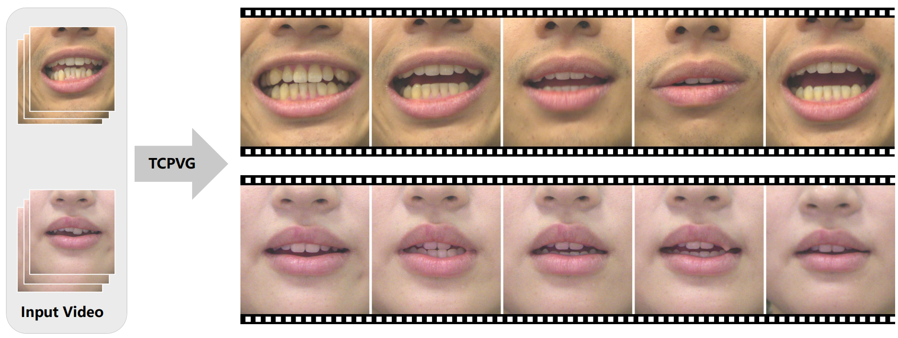
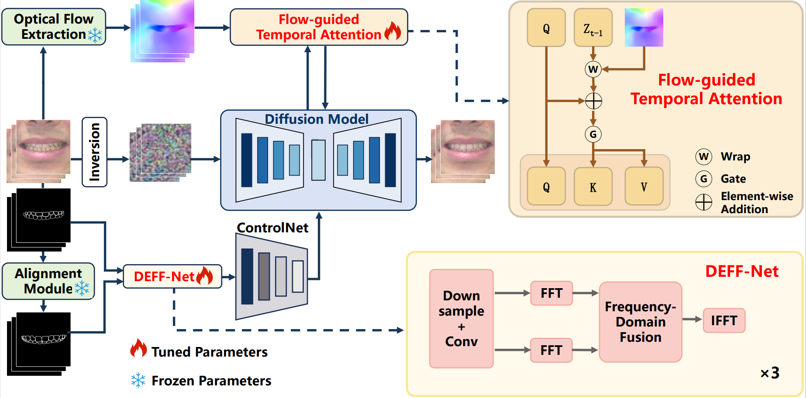

Recent advances in diffusion models have enabled post-treatment video generation to offer rich and intuitive previews of orthodontic outcomes. However, existing methods rely on 3D-2D contour projections for surrogate supervision, which introduces a domain gap between the 3D-derived and 2D segmentation contours. Moreover, mouth motion in speaking videos is rapid and highly non-rigid, resulting in flickering or geometric drift in temporal alignment. To address these challenges, we propose Temporally Consistent Post-orthodontic Video Generation (TCPVG), in which a Dual-Encoder Frequency Fusion Network (DEFF-Net) adaptively bridges the contour-style domain gap via multi-scale frequency fusion, and a Flow-guided Temporal Attention (FGTA) mechanism leverages dense optical flow and step-wise adaptive fusion to enhance motion coherence under fast articulations. Extensive experiments conducted on two natural speaking video datasets from different demographics demonstrate that TCPVG outperforms existing state-of-the-art baseline methods in both perceptual fidelity and temporal consistency. Specifically, compared to baselines and other mainstream video editing methods, our method significantly reduces the Fréchet Video Distance by over 37% and the Fréchet Inception Distance by over 39%, establishing a new benchmark for realistic orthodontic outcome visualization in speaking videos.

我们将 TCPVG 与其他方法进行对比，展示不同方法的生成效果。
Input → Ours (TCPVG) → 3DSN-Align → MAIM → VIRES
Input → Ours (TCPVG) → 3DSN-Align → MAIM → VIRES